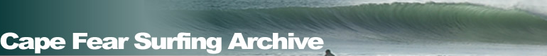
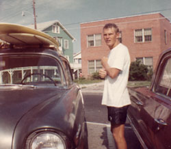
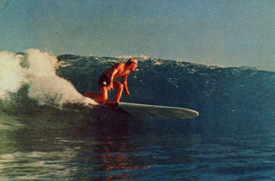

The first link goes Home . The second link is Research . The third link is Services . The fourth link is Collections . The fifth link is About . The sixth and last link is Ask a Librarian!

Robert Parker: The Originals' Original
In the spring 2002, Peter Fritzler had the opportunity to sit down with one of Wrightsville Beach's surfing sons, Robert Parker. One of the first surfers in the area, Parker has experienced what many could only dream .... traveling to California, Hawaii and Baja Mexico, making history with surf legends of the 60's, working in the surf apparel industry, and essentially living every part of the surfing lifestyle. Check out the beginnings of Parker's adventure below."I tell it from a point of reference that comes from another place of water activity. I was born and raised on Lumina Avenue across the street from Johnny Mercer's Fishing Pier. In the early days, let's say in the early to mid 1950's, my friends and I used to ride surf mats. We learned the action of the waves and the movement of the ocean by riding rubber surf mats that were rented at the pier. In fact, we ended up working for Johnny Mercer renting the surf mats, and we would ride mostly on our knees and we would have what we called ‘mat fights' and we would try to throw each other off - we had a lot of fun doing that. As I got older, my parents allowed me to have a boat motor and I learned how to water ski; I was pretty proficient at water-skiing. Through this connection, I was invited to the Georgia State Water Skiing Championships in Pine Mountain, GA – a place called Calloway Gardens where they held the Masters Water Ski tournament – it's specifically designed for water skiing. I went there in August 1963 and didn't do very well. I was disillusioned with water skiing and came back to Wrightsville. One day I went down into the garage and |
 |
| there was a surfboard – a Greg Noll surfboard with a one inch balsa stringer and had the old Noll logo – a fat little man, but this one had Noll with the striped trunks and a camera on the board. This was an original – Noll was originally a photographer as well as a great surfer, and this logo was on this board. So, I took this board out to the north side of Mercer's Pier. I don't really remember learning how to surf, but I guess from water skiing and riding surf mats, I must've learned this pretty quickly cause within several days I was up riding waves. At the same time that this was going on, my friend Jerry King (he lived a couple of blocks down the street) and his brother Gene King, were using the surfboard with me. The surfboard had been left in the garage by my cousin's fiancé, Pete Peterson. He was from Redondo Beach, CA and had been stationed at Fort Bragg with the 82 nd Airborne. He had left the board in the garage so he could come down and surf from time to time. |
|
| Jerry then went down to Florida and bought a board called a Tiki, board from Australia, and he brought it back to Wrightsville, so that's two surfboards that I'm aware of being in Wrightsville at the time. I know there's some mention of Lank Lancaster through all of this stuff. Some friends of mine were going down to Carolina Beach even before I did, and were meeting Lank. Allen Warwick and Roach Jones bought a board together from Lank. They were both lifeguards and great friends of mine – we had graduated from high school together. |
|
There was another guy, Jimmy Shepard that was a friend of mine, who also bought a board from Lank. I'm sure there were other people around, but I don't really remember too many other people surfing. So, the original people I remember were myself, Jerry and Gene King, Jimmy Shephard, Allen Warwick, Roach Jones, and Charlie Davis. In fact, in 1966, Charlie Davis took a picture of me from a water housing camera – probably the first water photograph taken in Wrightsville that I know of. That picture actually wound up in full color in Surfer Magazine. I don't know how many other pictures have been in Surfer, but that was in there in 1967. So, during the summer of 1963, I learned to surf and then I left Wilmington to attend the University of North Carolina at Chapel Hill. I didn't too well and returned to Wilmington in the spring of 1964. Obviously, |
 |
| we were all listening to the Beach Boys and Gidget had come out in theaters. So there was some interest in the media, but not a lot. We wanted more information about surfing and California, and it just wasn't available through the normal media. Eventually we bumped into Surfer Magazine by John Severson. I think it was Robert's Grocery that had some of the first Surfer magazines, but that had to be on into 1966 or '67. In the early days, our early contacts I know for sure were the Beach Boys - their music was incredible, it was almost magical. It was like something that came out of the airwaves that we paid attention to. They sang about surfing and going to Mexico and all this other stuff, and then obviously the movies. Then in the mid 1960s, either ' 64 or ' 65, Joe Funderburg and his group formed the Wrightsville Beach Surf Club, so by this time surfing was really starting to catch on here. I had actually written a letter in 1964 based on a logo I had seen in Surfer Magazine. I saw a logo of Hansen Surfboards in Cardiff, CA. I had no idea who this was or what this was, but I decided to write this man a letter, and said that I'd like to be a dealer selling his surfboards on the East Coast while I went to college. I said that I'd probably be opening a surf shop called the Onslow Bay Surf Shop. I don't know how many people know what Onslow Bay is, but it's the area between Cape Lookout and Cape Fear. So, I wrote this a guy a letter and he wrote me back and said that if I bought 3 surfboards, I could become a dealer, which I thought was pretty unique. So I wound up selling 2 of these surfboards, which I may have sold one to Allen Rippy, but I'm not sure, I may have also sold one to Joe Funderburg. So I became a dealer and then I went back to Hansen and said I'd like to create a surf team. And so I created the Onslow Bay Surf Team, and we were sponsored by Hansen as far as our boards – we got good deals on our boards, probably half price or whatever it was. And we got these jackets that we came up with the Hansen logos on them, and all that. On that team, from the people I remember were myself, Mike Curry, Mike Deep (now deceased), Doug Massey, Richard Verzaal, and Joe Funderburg. So we had that surf team for a year or so, and when you first get into surfing you think about contests, or somebody like the Jaycee's (April '66???), but it's kind of foggy as far as the dates go b/c I was traveling a lot. I remember we went down to Folly Beach, SC called the Carolina Surfing Championships and I won that in the Senior Men's. Billy Curry was really winning about everything. And then the whole thing got very contest oriented." More to follow on Parker's story in the future. |
|
Page created and maintained by:Peter Fritzler, Randall Library, University of North Carolina Wilmington
First online: April 10, 2002
Last update: November 1, 2007
Citing This Page:
Parker, Robert. "Robert Parker: The Originals' Original." Cape Fear Surfing Archive. William Randall Library, University of North Carolina Wilmington. [Created: April 10, 2002; Updated: November 1, 2007; Cited:]. Available from http://library.uncw.edu/surf/people/parkerr.